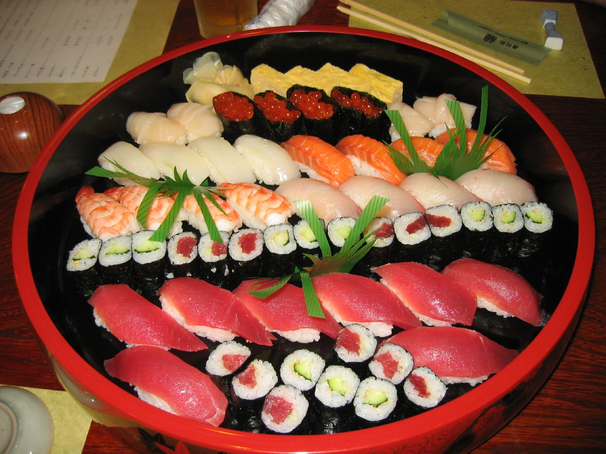
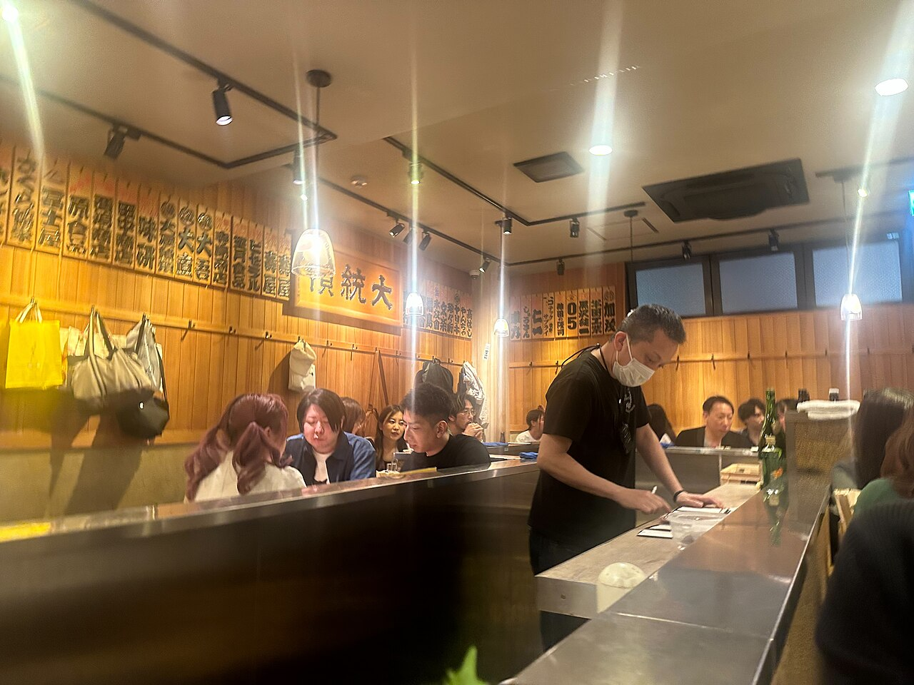
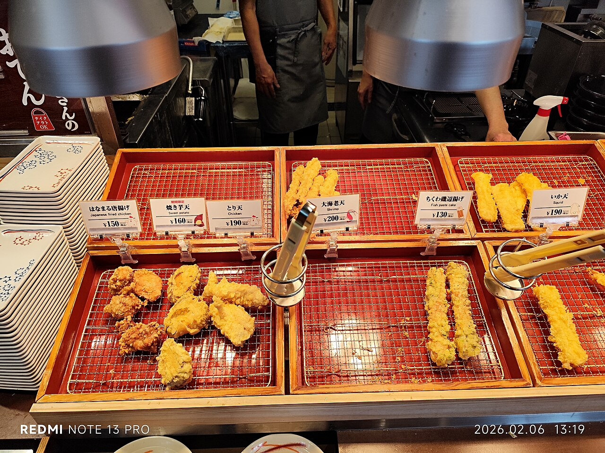

Tokyo has more Michelin stars than any city on earth and also the world's best cheap eats. You can eat like a king or spend five dollars on a perfect bowl, sometimes on the same block.



From a splurge omakase counter to a spinning conveyor belt, both are worth doing.
Feather-light battered seafood and veg, fried in front of you at a counter.
A crisp, juicy breaded pork cutlet with rice and cabbage, comfort food done right.
Grill-your-own Japanese barbecue, a fun, hands-on dinner with a teen.
A Japanese pub, small plates and drinks, the most relaxed and social way to eat.
Don't sleep on convenience-store food, the sandwiches and snacks are genuinely great.